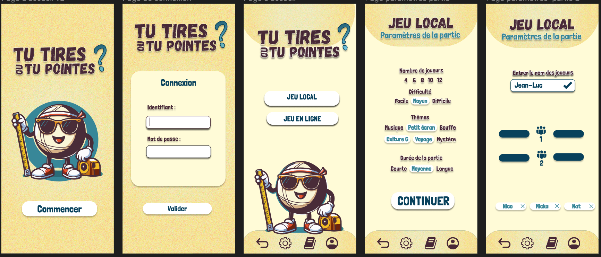
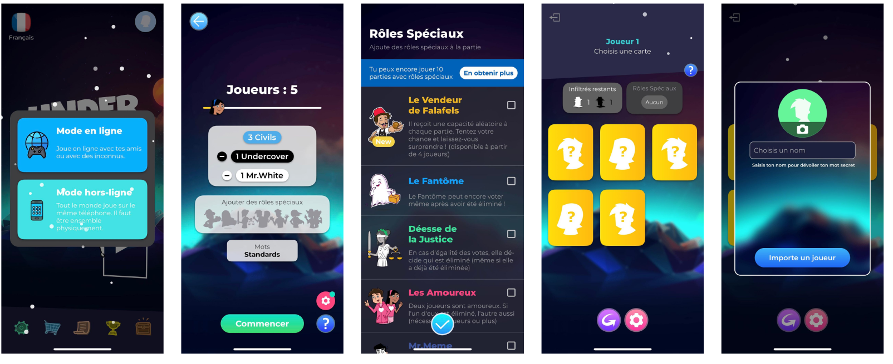
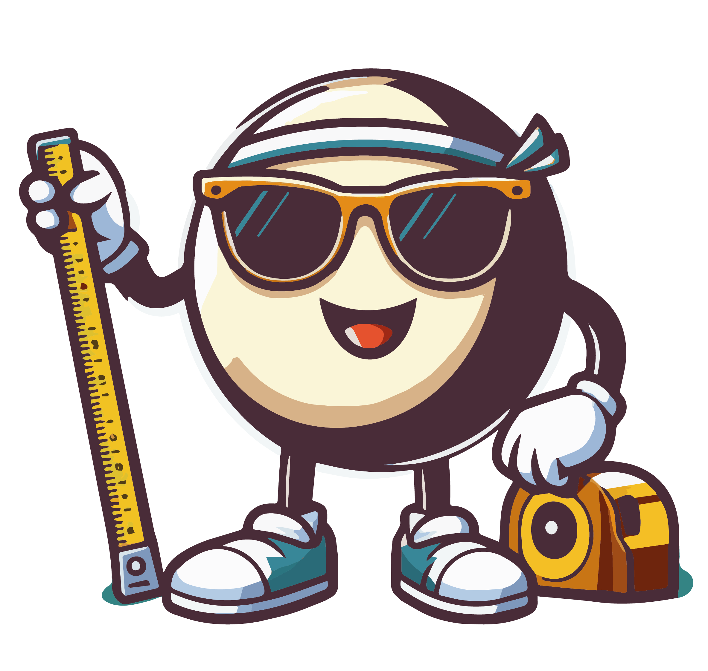
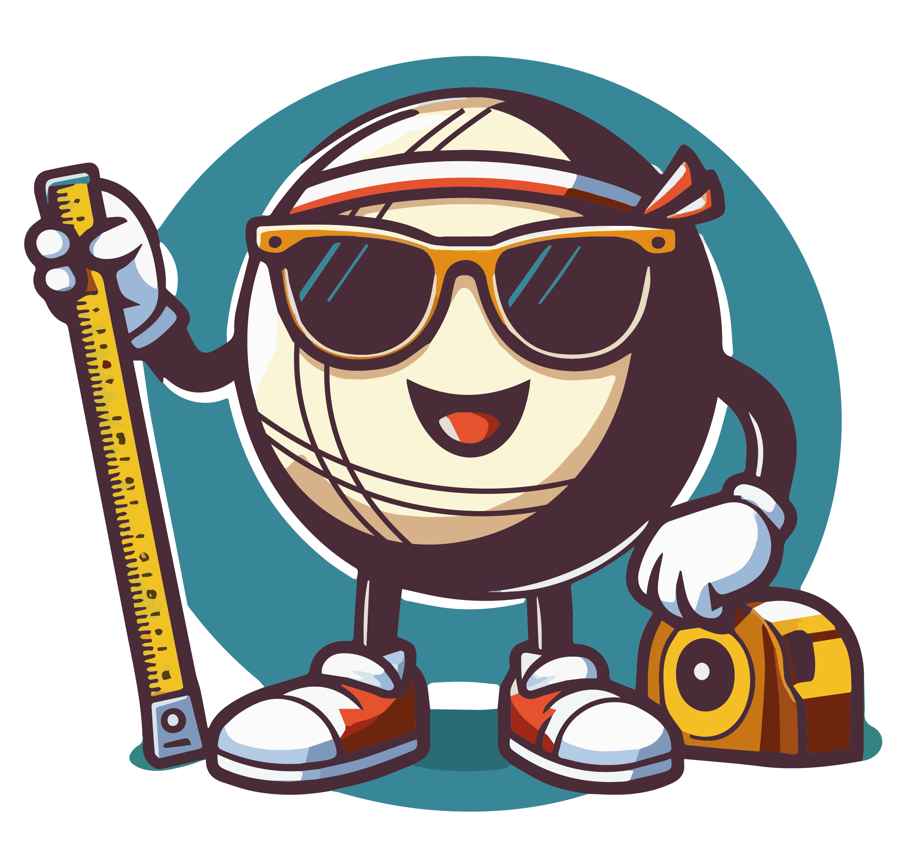
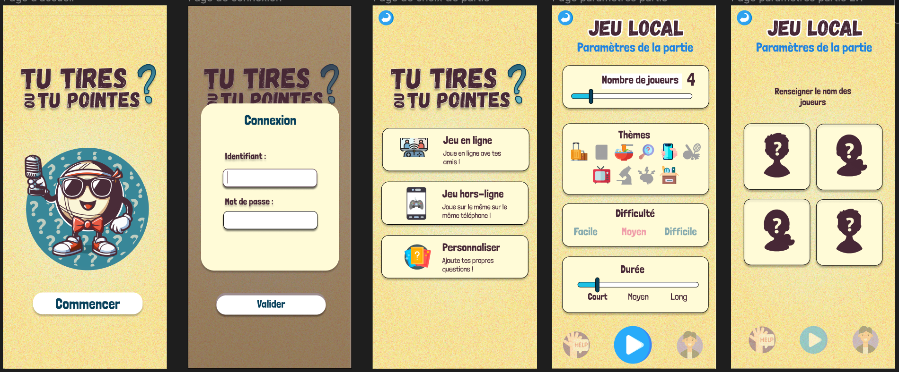
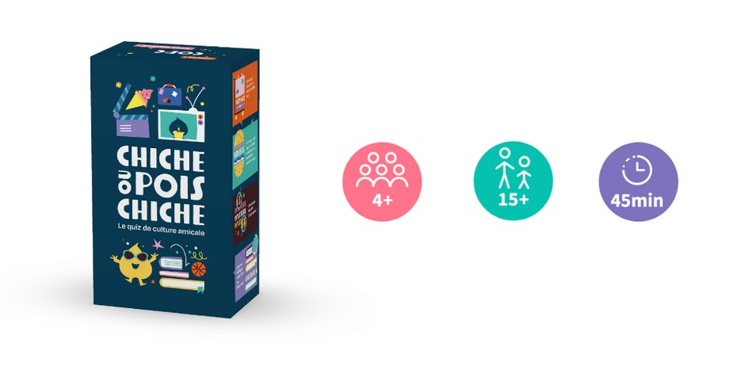

Tu tires ou tu pointes? La version mobile du jeu Chiche ou Pois Chiche
- PROJET
- 2023-2024
- Duc DANG VU
- Sarah SEBASTIEN
- Samy DIAFAT
Sommaire
- Contexte et objectifs du projet
- Comparaison avec le jeu papier
- "Tech stack" ou stack technique
- Organisation
- Résultats et livrables
- Apprentissage et retour d'expérience
- Capitalisation et suite à donner
Contexte et objectifs du projet
Comparaison avec le jeu papier
"Tech stack" ou stack technique
Organisation
Résultats et livrables
Maquette Figma
Comme la réussite de notre jeu résidait en grande partie à la réussite de l'expérience utilisateur de nos joueurs, il nous fallait nous appliquer particulièrement dans le design de notre interface.
Nous avions obtenu une première version à la fin des cours d'UX design, qui ressemblait à ceci :
Mais lors du cours d'UI, plus centré sur le design visuel, il nous a été reproché que notre design ne faisait pas assez jeu. En voulant nous adresser à un public large, plutôt que de choisir un persona, nous n'arrivions pas à nous décider sur des choix visuels précis.
Nous avons alors décidé de refaire toute la démarche, de définir un persona précis qui soit un jeune de notre âge, et de créer un Moodboard. Nous avons choisi de nous inspirer d'un jeu mobile sur le même principe que nous (ie qui se jouait sur un seul téléphone), et s'adressant aux jeunes : l’imposteur.
Nous avons alors analysé ce qu'il manquait à notre maquette essentiellement : des images/icônes, des couleurs, et un logo qui correspondait à l'univers du jeu.
Alors on a tenté de retravailler :
- notre logo
|  |  |
- notre maquette
Mais c'était très dur pour nous de nous défaire de notre idée de départ. Alors on s'est finalement dirigé vers une alternative de notre première idée :
Poster
Nous avons également présenté notre application lors de l'après- midi de présentation des projets 3A aux anciens de Do-It ainsi qu’aux élèves intéressés. Voici le poster que nous avons réalisé pour expliquer le concept, la planification et l’avancement du projet :

Application Bubble
Malheureusement l'option de déployer une application avec Bubble est payante. Mais vous trouverez ici une courte vidéo de présentation de l'application :
Et voici le lien vers un preview de notre application ici, avec lequel vous pourrez jouer !
Base de données Airtable
Pour la base de données, comme expliqué plus tôt, nous l'avons gérée avec Airtable.
Elle contient donc les informations complémentaires à Bubble, c'est-à-dire l’ensemble des données liées aux questions. Il y 234 questions différentes aujourd'hui dans la table. Au total, 200 proviennent des questions du jeu de cartes initial, et nous en avons ajouté 34 que nous avons créés sur les thèmes Histoire et Sciences.
Apprentissage et retour d'expérience
Capitalisation et suite à donner
Introduction
Ce projet a pour but de créer une version mobile du jeu de cartes “Chiche ou Pois Chiche”. Après plusieurs parties, on retombe rapidement sur les mêmes questions et le jeu devient vite obsolète pour un joueur une fois qu’il a rencontré toutes les questions et connaît toutes les réponses. Notre idée serait donc de créer une version mobile du jeu pour pouvoir alimenter la base de données et ainsi offrir aux fervents joueurs de “Chiche ou pois Chiche”, de pouvoir y jouer indéfiniment. De plus, une application mobile serait un moyen d'accroître la visibilité du jeu.

Le but du jeu est de gagner le plus de points en posant les bonnes questions à son ou ses partenaire de jeu. On forme plusieurs équipes de 2 minimum. Pour chaque question le joueur lit l'indice à son partenaire puis lui demande "Chiche ou Pois Chiche ?". Il répond "Chiche" s'il pense pouvoir répondre à la question sans proposition de réponse ou "Pois Chiche" s'il souhaite les 4 propositions. Si la réponse donnée est correcte l'équipe récupère une "Carte Chiche" (3 points) ou une "Carte Pois Chiche" (1 point) selon l'annonce faite précédemment.
Le jeu possède 8 catégories de questions pour permettre à tout le monde d’avoir des points forts et des faiblesses. ("Sport", "Culture G", "Petits écrans", "Grand écran", "Voyage", “Musique", "Bouffe")
Fonctionnalités
Voici une première liste de fonctionnalités que nous voulons implémenter sur l'application:
- La gestion d'un compte utilisateur
- Lancer un dé pour déterminer le type de tour
- Pouvoir rejoindre un salon avec les autres participants (mode en ligne? bluetooth?)
- Tirer aléatoirement une question
- Comptage de points
- Afficher la réponse à une question sur demande de l'utilisateur
Planification du projet
Nous avons réalisé une feuille de route pour notre projet, qui consiste en quelques étapes que nous devrons réaliser au fur et à mesure de notre avancement:
- Faire des maquettes de l'apparence graphique générale du jeu (sur Canva ou autres)
- Quelle charte graphique pour l'application?
- Quelle expérience utilisateur?
- Réfléchir sur les fonctionnalités de l’application
- Quelles règles établir? Ajout de règles?
- Elaboration d’un premier prototype sur Figma
- Apprentissage et prise en main de l'outil
- Première version en no code sur Bubble.io
- Création d'une première base de donnée de questions sur Bubble (ou autre) avec les questions du jeu
- Création de l'interface utilisateur
- Recueil d’un grand nombre de questions et de réponses
- Test et retours d’expérience auprès de plusieurs utilisateurs
- Améliorations sur le jeu suite aux remarques soulevées
- Possible migration (NiceGui sur Python)?